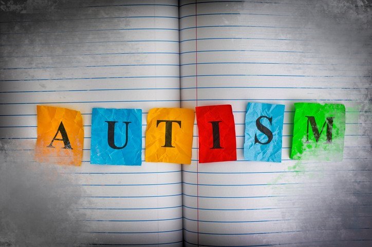

A Brief History of Autism
The story of a fascinating disability.

Here's a timeline of how Autism and its spectrum was discovered:
- 1908 - The German psychiatrist Eugene Bleuler coined the term “autism” to describe symptoms of some schizophrenia cases. Autism was then dexcribed as retreating to the inner life to avoid the harshness of reality.
- 1943 - Leo Kanner, a child psychiatrist, identified autsm as a psychological disorder in children. He noted that symptoms included obsessiveness, deficits in social behavior and a need for routine. He described it as "infantile autism".
- 1944 - Hans Asperger described a similar group of symptoms and coined the term "autism psychopathy". Hans Asperger was especially interested in those who were high-functioning who showed social deficits.
- 1967 - Kanner and others theorized that autism stemmed from poor parenting in a child’s early years. According to an article published by Kanner, emotionally cold mothers ("refrigerator" mothers) may have been responsible for the symptoms of autism in their children. Bruno Bettelheim was a strong supporter of this theory and publicised the idea of "refrigerator" mothers.
- 1977 - A study conducted by Susan Folstein and Michael Rutter found that autism had a high chance of occurring in one twin if their identical twin had autism. In the case of non-identical twins, however, there were no occurrences of autism in both siblings. This study told people that genetics may be involved in the "cause" of autism and challenged the view of "refrigerator" mothers.
- 1980 - Autism entered the Diagnostic and Statistical Manual of Mental Disorders as a separate entity. Autism was recognized as a developmental disorder separate from schizophrenia. Autism was divided into four subcategories: infantile autism, residual autism, childhood-onset pervasive developmental disorder and an atypical form.
- 1987 - The DSM-III (Diagnostic and Statistical Manual of Mental Disorders) was revised to broaden the concept of autism, and the criteria were expanded to include milder symptoms. The same year, Ivar Lovaas, the pioneer of applied behavioural analysis, published a study showing an improvement in the symptoms of autistic children after intensive behavioural therapy.
- 1988 - The movie “Rain Man” revolved around the story of an autistic savant, Raymond Babbitt, portrayed by Dustin Hoffman. This movie increased public awareness about autism spectrum disorder, but it also generated a stereotype regarding the abilities of people with autism.
- 1990 - In 1990, the U.S. Congress passed legislation to include autism in the category of education disability. This helped individuals with autism qualify for special education.
- 1994 - The DSM-4 was released with Asperger’s syndrome added as a separate subcategory of autism spectrum disorder.
- 1998 - Andrew Wakefield and his colleagues released a report in the Lancet journal suggesting that the measles, mumps and rubella (MMR) vaccine may predispose children to autism. The study involved only 12 subjects and did not have scientific controls, but it received widespread media attention. This resulted in a decline in MMR vaccination rates.
- 2001 - Use of thimerosal, a mercury-based preservative used in vaccines, was discontinued in childhood vaccines. This was due to the speculation regarding the association between thimerosal and autism. Many scientific studies have reported that there is no association between thimerosal and autism.
- 2013 - The DSM-5 was released, which combined all the subcategories of autism into a single diagnostic entity called the “autism spectrum disorder.” This was done to address inconsistencies in the criteria used in diagnosis.
“There needs to be a lot more emphasis on what a child CAN DO instead of what he can not do.”
-- Dr. Temple Grandin
If you have time, you should read more about this on the National Autistic Society Site.
Sources
- The Recovery Village: The History of Autism